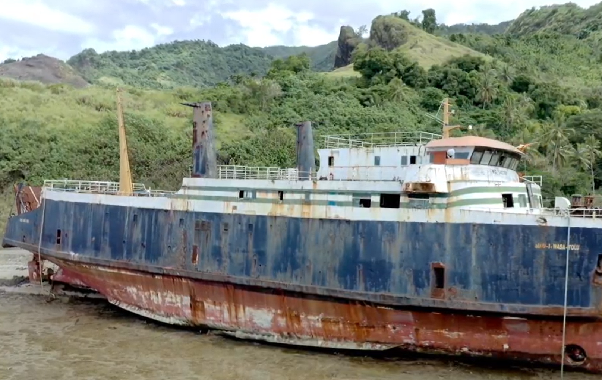

Development & Regional Storytelling
The following videos represent a small sample of my development communication work across the Pacific, including projects involving documentary storytelling, editing, animation, and digital production with local agencies and regional and international partners.

Pacific Islands Forum Secretariat Strategy Video
2022

Pacific Islands Forum Secretariat Project
2023

The Memory Project
ABC International Development, 2023

UNDP Gov4Res Project
UNDP Pacific, 2021

2019 Winners – Pacific ASEAN Challenge
UNCDF Pacific, 2020

Kina Bank Challenge
UNCDF Pacific, 2019

PFIP – 10 Years of Achievements
UNCDF Pacific, 2019

UNCDF Pacific Project
2019

FinTech Challenge – Lessons Learned
UNCDF Pacific, 2019